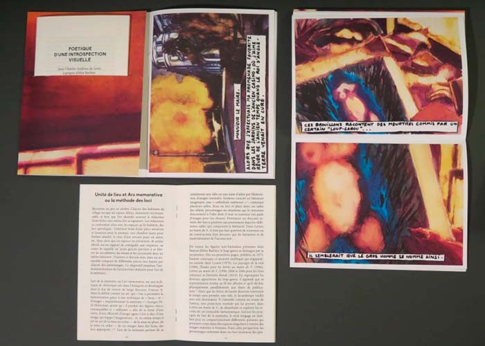
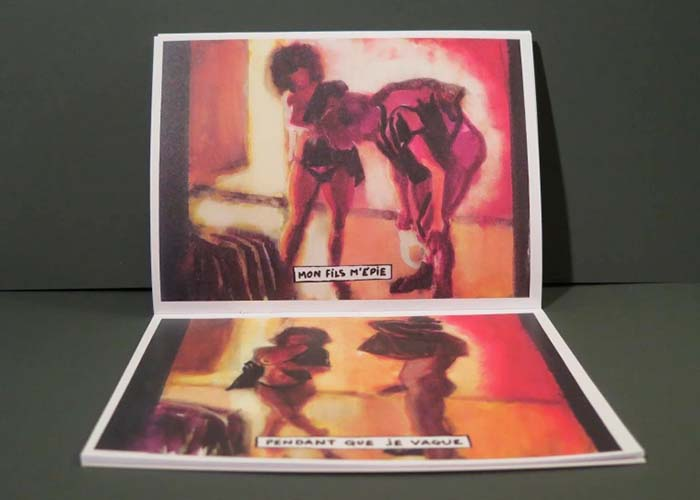
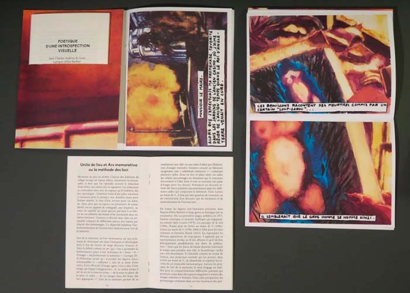
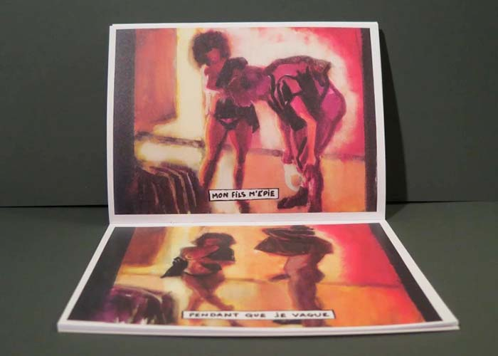

IMAGEs
IMAGEs est une société d’édition d’imagerie théorique en joint venture issue de la fusion du semeîon iconique et de l’eikôn sémiotique. Elle fut forgée en 2018 par Annabelle Dupret. OR BOR est sa revue brute.

 




OR BOR
IMAGEs est une société d’édition d’imagerie théorique en joint venture issue de la fusion du semeîon iconique et de l’eikôn sémiotique. Elle fut forgée en 2018 par Annabelle Dupret. OR BOR est sa revue brute, 1 A2 offset r/v couleur sur papier Munken 150g. 4 numéros/an, 1# = 1 artiste / 1 article / 1 biographie (fr/en) 1 œuvre en cover + 6 œuvres.
CONTRIBUTEURS
Jean-Charles Andrieu de Levis | Auteur
Adolpho Avril | Auteur
Alex Barbier | Auteur
Olivier Deprez | Auteur
Benjamin Monti | Auteur
Aarnoud Rommens | Auteur
Annabelle Dupret | Auteure | Editrice | PAO
Lorenz Ohrmer | Traduction
Lucas Faugère | Traduction
Xavier Löwenthal | Graphisme
Baptiste Saint Levaux | Graphisme
COMMANDES
 K1L | BELGIQUE | PARTOUT | MONDELIBRAIRIE LAME | FRANCE | PARTOUT | MONDE
K1L | BELGIQUE | PARTOUT | MONDELIBRAIRIE LAME | FRANCE | PARTOUT | MONDE
CONTACT
IMAGEs | OR BOR
Annabelle Dupret
146, rue de la Victoire 1060 Bruxelles BELGIQUE
annabelledupret@gmail.com